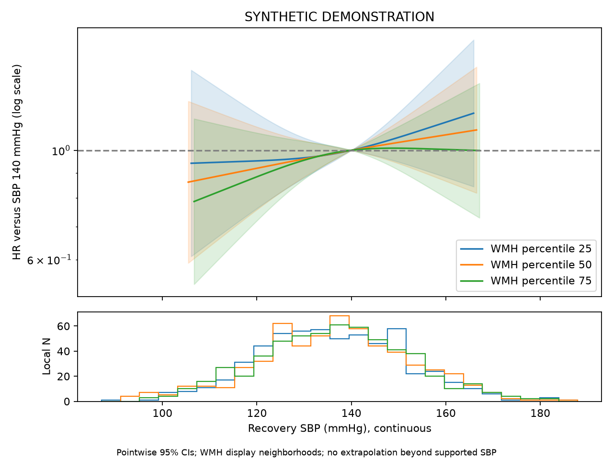

SYNTHETIC DEMONSTRATION — NOT PATIENT RESULTS
四项独立队列；不要求Hcy。患者行和ID仅保存在本地分析目录，不进入本报告。
| step | remaining | excluded_here |
|---|---|---|
| clinical_image_union | 2400 | 0 |
| adult_ischemic_stroke | 2400 | 0 |
| available_true_icv | 2400 | 0 |
| available_wmh_ml | 2400 | 0 |
| alive_at_month3 | 2400 | 0 |
| observed_recovery_sbp | 2399 | 1 |
| known_actual_visit_day | 2399 | 0 |
| known_five_year_status_and_time | 2399 | 0 |
| consistent_first_recurrence | 2399 | 0 |
| no_recurrence_before_or_on_visit | 2343 | 56 |
| no_observation_after_dated_death | 2310 | 33 |
| followup_after_visit | 2310 | 0 |
| analysis | study | tier | family | status | n | outcome_unknown | parameters | imputations | p | statistic | df1 | df2 | r | method | m | primary_terms |
|---|---|---|---|---|---|---|---|---|---|---|---|---|---|---|---|---|
| primary | bp | primary | cox | ESTIMATED | 2310 | 0 | 35 | 2 | 0.4532 | 0.7914 | 2 | 1.079e+11 | 3.729e-06 | D1 pooled multivariate Wald | 2 | sbp3_x_wmh_ml;sbp3_rcs_x_wmh_ml |
| complete_case | bp | sensitivity | cox | ESTIMATED | 2139 | 0 | 35 | 1 | 0.2221 | 1.505 | 2 | inf | 0 | D1 pooled multivariate Wald | 1 | sbp3_x_wmh_ml;sbp3_rcs_x_wmh_ml |
| mean_arms | bp | sensitivity | cox | ESTIMATED | 2310 | 0 | 35 | 2 | 0.3993 | 0.9181 | 2 | 2.689e+07 | 0.0002362 | D1 pooled multivariate Wald | 2 | sbp3_x_wmh_ml;sbp3_rcs_x_wmh_ml |
| month12_landmark | bp | sensitivity | cox | ESTIMATED | 2158 | 0 | 35 | 2 | 0.4223 | 0.862 | 2 | 5.601e+07 | 0.0001637 | D1 pooled multivariate Wald | 2 | sbp3_x_wmh_ml;sbp3_rcs_x_wmh_ml |
| time_varying | bp | sensitivity | cox | ESTIMATED | 2310 | 0 | 41 | 2 | 0.2324 | 1.459 | 2 | 1.073e+10 | 1.183e-05 | D1 pooled multivariate Wald | 2 | sbp3_x_wmh_ml_late;sbp3_rcs_x_wmh_ml_late |
多分类系数取指数表示 P(该状态)/P(独立) 的比值之比，不能标为HR。联合检验显著不代表每个系数都显著。

SBP始终连续建模；主图展示样条关联。140 mmHg仅为参照，固定点对比是补充表。阴影为逐点区间。
| estimate | se | lower | upper | p | df | m | within_variance | between_variance | term | scale | ratio | ratio_lower | ratio_upper |
|---|---|---|---|---|---|---|---|---|---|---|---|---|---|
| 0.04817 | 0.06634 | -0.08186 | 0.1782 | 0.4678 | 1.356e+07 | 2 | 0.0044 | 7.969e-07 | sbp3 | HR | 1.049 | 0.9214 | 1.195 |
| -0.01096 | 0.06379 | -0.136 | 0.1141 | 0.8635 | 2.827e+07 | 2 | 0.004068 | 5.101e-07 | sbp3_rcs | HR | 0.9891 | 0.8729 | 1.121 |
| 0.3858 | 0.1159 | 0.1586 | 0.613 | 0.0008745 | 3.646e+10 | 2 | 0.01344 | 4.692e-08 | wmh_ml | HR | 1.471 | 1.172 | 1.846 |
| -0.09225 | 0.1093 | -0.3064 | 0.1219 | 0.3986 | 4.459e+12 | 2 | 0.01194 | 3.771e-09 | wmh_ml_rcs | HR | 0.9119 | 0.7361 | 1.13 |
| -0.2236 | 0.0789 | -0.3783 | -0.06898 | 0.004594 | 2.403e+09 | 2 | 0.006225 | 8.467e-08 | age | HR | 0.7996 | 0.6851 | 0.9333 |
| 0.1882 | 0.09299 | 0.005949 | 0.3705 | 0.04298 | 3.164e+08 | 2 | 0.008647 | 3.241e-07 | age_rcs | HR | 1.207 | 1.006 | 1.448 |
| 0.05241 | 0.07459 | -0.0938 | 0.1986 | 0.4823 | 6.573e+11 | 2 | 0.005564 | 4.575e-09 | sex_2 | HR | 1.054 | 0.9105 | 1.22 |
| 0.01588 | 0.1076 | -0.1949 | 0.2267 | 0.8827 | 9.697e+06 | 2 | 0.01157 | 2.477e-06 | smoking_2 | HR | 1.016 | 0.8229 | 1.254 |
| 0.1539 | 0.1028 | -0.04755 | 0.3554 | 0.1343 | 4.885e+08 | 2 | 0.01056 | 3.187e-07 | smoking_3 | HR | 1.166 | 0.9536 | 1.427 |
| 0.04974 | 0.1075 | -0.1609 | 0.2604 | 0.6435 | 4.909e+08 | 2 | 0.01155 | 3.475e-07 | smoking_4 | HR | 1.051 | 0.8514 | 1.297 |
| -0.2186 | 0.1049 | -0.4241 | -0.01305 | 0.03712 | 2.315e+11 | 2 | 0.011 | 1.523e-08 | drinking_2 | HR | 0.8037 | 0.6544 | 0.987 |
| -0.2425 | 0.1029 | -0.4442 | -0.04088 | 0.01841 | 1.204e+09 | 2 | 0.01058 | 2.034e-07 | drinking_3 | HR | 0.7846 | 0.6413 | 0.9599 |
| -0.1704 | 0.1028 | -0.3718 | 0.03105 | 0.09734 | 6.551e+08 | 2 | 0.01056 | 2.751e-07 | drinking_4 | HR | 0.8433 | 0.6895 | 1.032 |
| -0.001034 | 0.07473 | -0.1475 | 0.1454 | 0.989 | 8595 | 2 | 0.005524 | 4.015e-05 | hypertension_2 | HR | 0.999 | 0.8628 | 1.157 |
| -0.04902 | 0.07433 | -0.1947 | 0.09666 | 0.5096 | 8.193e+10 | 2 | 0.005524 | 1.287e-08 | diabetes_2 | HR | 0.9522 | 0.8231 | 1.101 |
| -0.007473 | 0.07462 | -0.1537 | 0.1388 | 0.9202 | 1.959e+10 | 2 | 0.005568 | 2.652e-08 | prior_stroke_2 | HR | 0.9926 | 0.8575 | 1.149 |
| 0.02684 | 0.01216 | 0.003006 | 0.05068 | 0.02731 | 2.828e+05 | 2 | 0.0001477 | 1.855e-07 | bmi | HR | 1.027 | 1.003 | 1.052 |
| -0.01431 | 0.1364 | -0.2817 | 0.2531 | 0.9164 | 4.231e+04 | 2 | 0.01852 | 6.032e-05 | cysc | HR | 0.9858 | 0.7545 | 1.288 |
| 0.0529 | 0.03544 | -0.01657 | 0.1224 | 0.1356 | 2.13e+09 | 2 | 0.001256 | 1.815e-08 | sbp0 | HR | 1.054 | 0.9836 | 1.13 |
| -0.1341 | 0.07452 | -0.2801 | 0.012 | 0.07203 | 1.77e+10 | 2 | 0.005554 | 2.783e-08 | chd_1 | HR | 0.8745 | 0.7557 | 1.012 |
| 0.09785 | 0.1181 | -0.1336 | 0.3293 | 0.4073 | 3.886e+19 | 2 | 0.01394 | 1.491e-12 | toast_2 | HR | 1.103 | 0.875 | 1.39 |
| 0.06581 | 0.1191 | -0.1676 | 0.2992 | 0.5805 | 1.346e+11 | 2 | 0.01418 | 2.578e-08 | toast_3 | HR | 1.068 | 0.8457 | 1.349 |
| 0.1188 | 0.1177 | -0.1119 | 0.3495 | 0.3128 | 2.021e+09 | 2 | 0.01385 | 2.054e-07 | toast_4 | HR | 1.126 | 0.8941 | 1.418 |
| -0.002839 | 0.1194 | -0.2368 | 0.2311 | 0.981 | 3.034e+09 | 2 | 0.01425 | 1.725e-07 | toast_5 | HR | 0.9972 | 0.7892 | 1.26 |
| -0.04729 | 0.07466 | -0.1936 | 0.09903 | 0.5265 | 4.887e+07 | 2 | 0.005573 | 5.315e-07 | icas_2 | HR | 0.9538 | 0.824 | 1.104 |
| 0.02205 | 0.07477 | -0.1245 | 0.1686 | 0.768 | 7.346e+07 | 2 | 0.00559 | 4.349e-07 | prior_bp_med_2 | HR | 1.022 | 0.8829 | 1.184 |
| 0.166 | 0.09573 | -0.02165 | 0.3536 | 0.08294 | 1.274e+11 | 2 | 0.009165 | 1.712e-08 | discharge_bp_med_2 | HR | 1.181 | 0.9786 | 1.424 |
| 0.01185 | 0.09958 | -0.1833 | 0.207 | 0.9053 | 2.659e+11 | 2 | 0.009916 | 1.282e-08 | mrs3_1 | HR | 1.012 | 0.8325 | 1.23 |
| -0.01194 | 0.1006 | -0.209 | 0.1852 | 0.9055 | 1.59e+08 | 2 | 0.01011 | 5.347e-07 | mrs3_2 | HR | 0.9881 | 0.8114 | 1.203 |
| -0.1742 | 0.1514 | -0.471 | 0.1226 | 0.25 | 2.735e+10 | 2 | 0.02294 | 9.247e-08 | mrs3_3 | HR | 0.8401 | 0.6244 | 1.13 |
| -0.1294 | 0.1772 | -0.4768 | 0.218 | 0.4652 | 7.015e+11 | 2 | 0.03142 | 2.501e-08 | mrs3_4 | HR | 0.8786 | 0.6207 | 1.244 |
| -0.2334 | 0.2422 | -0.7081 | 0.2412 | 0.335 | 5.74e+08 | 2 | 0.05864 | 1.632e-06 | mrs3_5 | HR | 0.7918 | 0.4926 | 1.273 |
| -0.01328 | 0.04197 | -0.09553 | 0.06898 | 0.7517 | 1.997e+08 | 2 | 0.001761 | 8.308e-08 | icv_ml | HR | 0.9868 | 0.9089 | 1.071 |
| 0.05912 | 0.05648 | -0.05159 | 0.1698 | 0.2952 | 2.911e+10 | 2 | 0.00319 | 1.247e-08 | sbp3_x_wmh_ml | HR | 1.061 | 0.9497 | 1.185 |
| -0.07798 | 0.06264 | -0.2008 | 0.0448 | 0.2132 | 1.803e+10 | 2 | 0.003924 | 1.948e-08 | sbp3_rcs_x_wmh_ml | HR | 0.925 | 0.8181 | 1.046 |
| wmh_percentile | wmh_ml | sbp | reference_sbp | local_n | support_min | support_max | display | estimate | se | lower | upper | p | df | m | within_variance | between_variance | HR | HR_lower | HR_upper | status |
|---|---|---|---|---|---|---|---|---|---|---|---|---|---|---|---|---|---|---|---|---|
| 25 | 7.162 | 120 | 140 | 577 | 87.1 | 186.2 | fixed_contrast_observed_range | -0.04967 | 0.1133 | -0.2718 | 0.1725 | 0.6612 | 2.674e+07 | 2 | 0.01284 | 1.656e-06 | 0.9515 | 0.762 | 1.188 | ESTIMATED |
| 25 | 7.162 | 130 | 140 | 577 | 87.1 | 186.2 | fixed_contrast_observed_range | -0.03537 | 0.04765 | -0.1288 | 0.05801 | 0.4578 | 6.046e+07 | 2 | 0.00227 | 1.946e-07 | 0.9652 | 0.8792 | 1.06 | ESTIMATED |
| 25 | 7.162 | 150 | 140 | 577 | 87.1 | 186.2 | fixed_contrast_observed_range | 0.06026 | 0.05872 | -0.05482 | 0.1753 | 0.3048 | 2.994e+12 | 2 | 0.003448 | 1.328e-09 | 1.062 | 0.9467 | 1.192 | ESTIMATED |
| 50 | 10.62 | 120 | 140 | 578 | 92.07 | 187.9 | fixed_contrast_observed_range | -0.08418 | 0.09867 | -0.2776 | 0.1092 | 0.3935 | 1.914e+07 | 2 | 0.009733 | 1.483e-06 | 0.9193 | 0.7576 | 1.115 | ESTIMATED |
| 50 | 10.62 | 130 | 140 | 578 | 92.07 | 187.9 | fixed_contrast_observed_range | -0.04052 | 0.04298 | -0.1248 | 0.04371 | 0.3457 | 4.504e+07 | 2 | 0.001847 | 1.835e-07 | 0.9603 | 0.8827 | 1.045 | ESTIMATED |
| 50 | 10.62 | 150 | 140 | 578 | 92.07 | 187.9 | fixed_contrast_observed_range | 0.03682 | 0.05028 | -0.06173 | 0.1354 | 0.464 | 2.288e+17 | 2 | 0.002528 | 3.524e-12 | 1.038 | 0.9401 | 1.145 | ESTIMATED |
| 75 | 16.47 | 120 | 140 | 577 | 97.24 | 182.7 | fixed_contrast_observed_range | -0.1241 | 0.1047 | -0.3293 | 0.08115 | 0.236 | 3.184e+07 | 2 | 0.01096 | 1.295e-06 | 0.8833 | 0.7194 | 1.085 | ESTIMATED |
| 75 | 16.47 | 130 | 140 | 577 | 97.24 | 182.7 | fixed_contrast_observed_range | -0.04648 | 0.04496 | -0.1346 | 0.04164 | 0.3012 | 6.21e+07 | 2 | 0.002021 | 1.71e-07 | 0.9546 | 0.8741 | 1.043 | ESTIMATED |
| 75 | 16.47 | 150 | 140 | 577 | 97.24 | 182.7 | fixed_contrast_observed_range | 0.009732 | 0.05213 | -0.09245 | 0.1119 | 0.8519 | 7.221e+11 | 2 | 0.002718 | 2.132e-09 | 1.01 | 0.9117 | 1.118 | ESTIMATED |
完成模型 2；参数数 35；最大设计条件数 7.4。完整诊断见 fit_diagnostics.json。
缺失处理依赖MAR假设。功能状态图为固定访视结局的标准化概率，不是首次失能的累积发生率。血压分析是实测血压的条件关联。次要分析报告研究内BH-FDR；总汇报另列本版固定四项Holm校正。